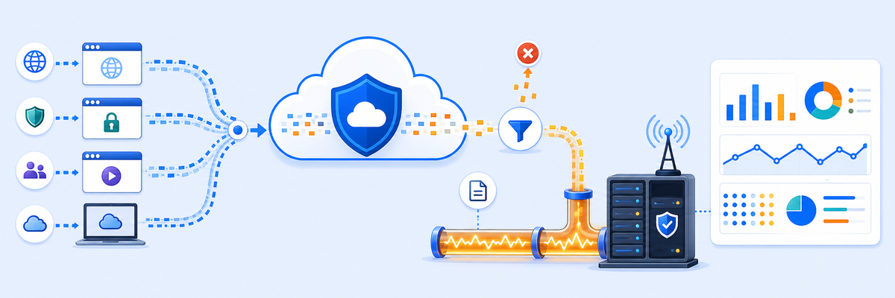

Lab 4: Configure ZIA Logging & Reporting
LAB 4
Scenario: Safemarch needs blocked web traffic events to stream in real time from ZIA to the on-premises SIEM for threat analysis and compliance reporting. You will add the NSS VM, configure an NSS Feed, and verify log records arrive at the SIEM.

THINK FIRST · ZIA LOG STREAMING
NSS is Zscaler's bridge between cloud-generated logs and your on-premises SIEM — without it, your security team is flying blind during an incident.
- Why would you filter the NSS feed to stream only "blocked" web transactions rather than all traffic — what is the operational benefit and what do you lose?
- The NSS Server VM is at 10.0.0.4. What would happen if you configure the Management Interface and Service Interface with the same IP address?
- What is the purpose of using WinSCP to transfer the NSS certificate to the NSS Server VM rather than generating it on the VM?
Configuration Requirements
Work through all four requirements. Check each one off as you complete it.
NSS Server · ZIA Admin Portal → Administration → Nanolog Streaming Service → NSS Servers
NSS Feed · ZIA Admin Portal → Administration → Nanolog Streaming Service → NSS Feeds
SIEM Server Setup · Corp: SIEM Server (10.0.0.2) — Ubuntu Linux
Verification · Corp: SIEM Server (10.0.0.2)
Testing Requirements
- On Corp: SIEM Server (10.0.0.2), run
sudo systemctl status rsyslog— confirm it shows active (running). - From Corp: Client PC (192.168.1.1), browse to a blocked site (e.g.
www.freeslots-machines.com) to generate a blocked event. - On the SIEM, run
sudo tail -f /var/log/syslogand confirm CSV log records appear within seconds. - In ZIA Admin Portal → Analytics → Web Insights, confirm the same block event is visible with the correct action and URL category.
Where to get help
My Questions
My Notes
MENTAL NOTE
Three things must align for logs to flow: (1) NSS Server — the VM registered in ZIA (10.0.0.4/10.0.0.5), (2) NSS Feed — defines CSV format, block-only filter, SIEM dest 10.0.0.2:514, (3) rsyslog on the SIEM — must be listening on TCP 514 before the feed delivers records. All three are required; missing any one and logs silently never arrive.